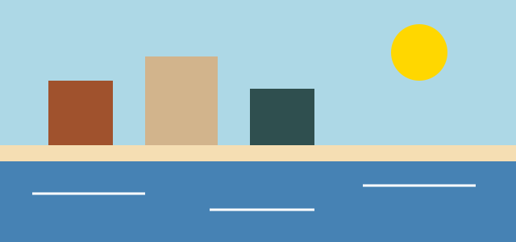

Прогулки по Самаре
Несколько мест, куда можно сходить пешком после учёбы или в выходной.

Набережная
На набережной можно пройтись вдоль Волги и отдохнуть на скамейке. Вечером у воды бывает прохладно, поэтому стоит взять ветровку.
Самара пешком
Несколько мест, куда можно сходить пешком после учёбы или в выходной.

На набережной можно пройтись вдоль Волги и отдохнуть на скамейке. Вечером у воды бывает прохладно, поэтому стоит взять ветровку.